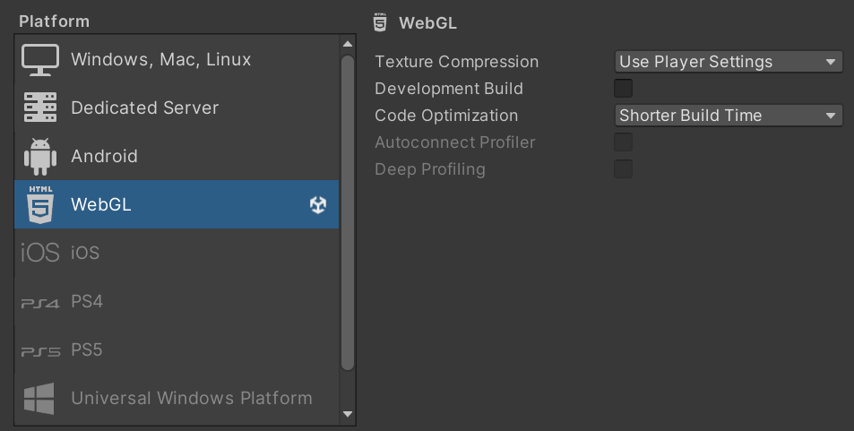
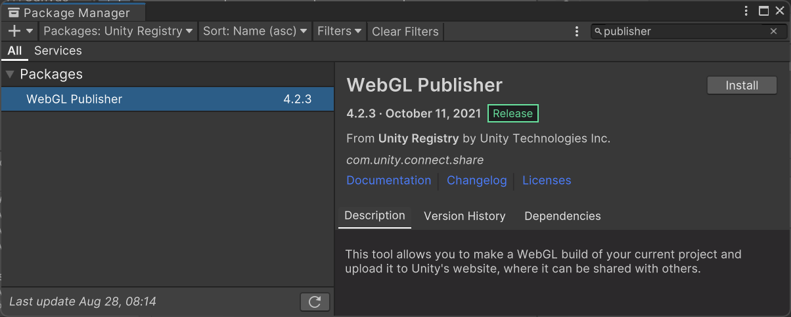
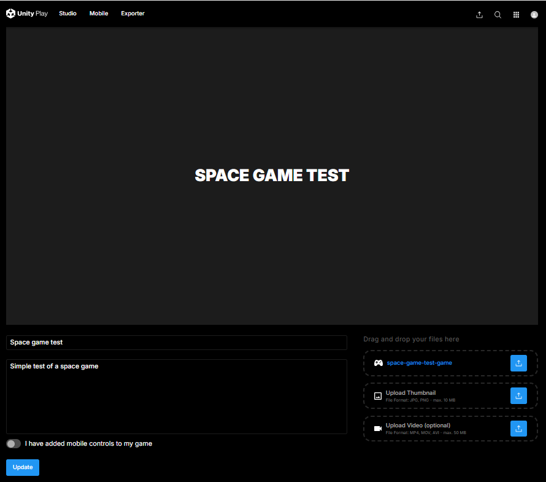

WebGL-julkaisu
- Avaa File / Build Settings, valitse WebGL ja paina Switch Paltform

Voit nyt ajaa pelin tarvittaessa paikallisesti selaimessa. Kun halutaan julkaista peli Unity Play-sivustolla tarvitaan lisäosa WebGL Publisher.
- valitse Window / Package Manager, asenna WebGL Publisher (Packages: Unity Registry)

- Valitse Install
Nyt valikkoon tulee vaihtoehto Publish / WebGL Project
- Avaa valikko ja valitse Build and Publish.
- Valitse projektisi kansio, julkaisija tekee uuden alikansion WebGL Builds
- Kun peli avataan selaimessa anna sille nimi ja lyhyt kuvaus, paina lopuksi Update.
